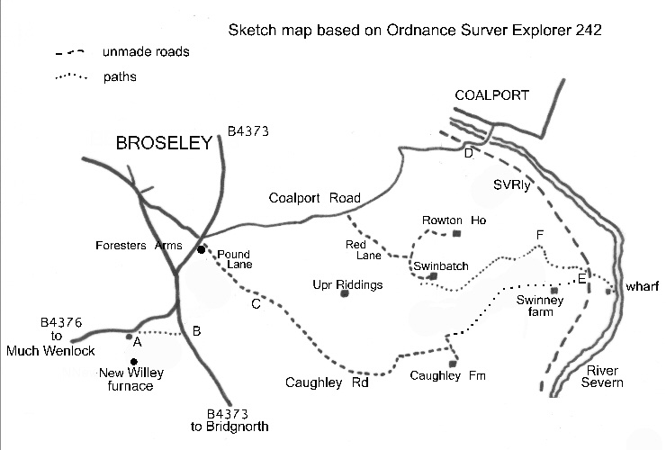

Exploring Telford
In the Footsteps of Bertram Baxter
by John Wooldridge
This page contents © John Wooldridge 2007
Tarbatch Dingle Tramroad, Shropshire

Exploring TelfordIn the Footsteps of Bertram Baxterby John WooldridgeThis page contents © John Wooldridge 2007Tarbatch Dingle Tramroad, Shropshire |
|
On 9 July 1787 the world's first iron boat was launched at Willey Wharf on the River Severn in Shropshire. The boat was built by John Wilkinson (1) and named Trial. Thirty years earlier, in 1757, the New Willey Company was formed, with John Wilkinson as junior partner; and when their new ironworks, half a mile south of Broseley were opened in 1759 the Company constructed a tramroad from there, eastwards for 3 miles to Willey Wharf (2). It was long believed that the more or less complete Trial was transported from New Willey Furnace to Willey Wharf along this tramroad. This is a romantic view. Opinion however, has changed and it is now thought more likely that the vessel was assembled then launched at Willey Wharf. The shift of opinion has come about partly because of the evidence of the tramway in Tarbatch Dingle (3). Here, the tramroad course, while descending on a narrow ledge along the side of a small ravine, also bends sharply from NE almost to SSE. Negotiating the 70 foot long by 6' 8.5" wide Trial at this point would have been very difficult indeed, and likely impossible for the much larger boat that Wilkinson reportedly launched soon afterwards (4).
The gazetteer of Bertram Baxter's Stone Blocks and Iron Rails says: Willey Furnace Tramroad. At Balls Foundry, south of Gitchfield Tile Works, west up Tarbatch Dingle to Willey Furnaces. 3 miles. No trace. (May have used the route of the earlier line to Rowton mines). Opened 1748. Track: wooden rails. Owner: George Weld, later John Wilkinson (1757). Although Baxter uses the name Willey Furnace for the tramroad, the name Tarbatch Dingle Tramroad (or Railway) is the one generally associated with it. Indeed, there is evidence of another tramroad leaving New Willey Furnace and heading NNW, with which the names Benthall Railway (5) and Willey Furnace Tramroad have been associated. Baxter gives the (original) rails as wooden but as early as 1767 in nearby Coalbrookdale, iron topped wooden rails were introduced, soon to be replaced by iron rails. It is likely that such an enthusiast for the use of iron as John Wilkinson would have been amongst the first to introduce such technology.
|
The site of John Wilkinson's
New Willey Furnace is marked on O.S. Explorer 242. A car can be parked
beside the B 4376, Broseley to Much Wenlock road, just east of The
Round House A, the recently restored octagonal tollhouse.
This house is situated at the northern end of a causeway, possibly the
furnace dam, but certainly it was a turnpike road to Willey village.
It is likely that the tramroad, at furnace top level, left the works
site along this causeway and, at The Round House, turned sharply
east to pass along a bridleway which, though much overgrown is 11 metres
wide, between two parallel lines of (scrub/coppiced) trees (6). Such a
promising start soon ends at the B4373, beyond which B the ground
rises sharply and an incline would have been necessary. At this point
the B 4373 has been cut into the hillside and would have destroyed the
lower part of the incline. Eastwards, agriculture has long since removed any tramroad remains. As there is no convenient footpath it is preferable to drive north to the Foresters Arms on the B4373 in Broseley and turn right into Pound Lane. This soon becomes the unmade (and unnamed) Caughley Road. Stop beneath the overhead electricity lines at C. Here, the tramroad reached its highest point as it crossed Caughley Road, the overhead electricity lines on each side indicating the tramroad line. The line then passes just north of Upper Riddings Farm and heads just south of Swinbatch but nothing can be seen on the ground. The absence of a convenient footpath might suggest driving, either along the unmade/unnamed Red Lane towards Rowton House and stopping near Swinbatch (where parking is not easy), or taking the (recommended) longer drive to the eastern end of the tramroad. To do this follow Coalport Road eastwards towards Coalport Bridge. Shortly before the river bridge, the road crosses the old Severn Valley Railway D. The yellow brick Station House is occupied; occupied too (in January 2008) were the two, carefully restored, chocolate and cream railway carriages in the garden. Turn right along the concrete track (signed Swinney) beside these carriages. This is the SVR course which soon passes a sewage works. From here the SVR course is rough but in regularly use. Park soon after passing the sewage works, on the railway bridge over Tarbatch Dingle E. (Note: Permission to walk in Tarbatch Dingle should be sought from the Willey Estate office 01952 883946). South of the brook is a rough track leading to Swinney Farm. On the north bank of the brook is a path, well disguised by growth that leads westwards into Tarbatch Dingle. In 120 metres two, small disused quarries are passed on the right and then the brook is crossed. The valley narrows and steepens and the path becomes a ledge. Approaching the bend F growth, even in winter makes for slow progress. Being on the inside of the bend, the path is forced to turn sharply through more than 90 degrees. The path condition improves and towards the top of the dingle, game bird pens are passed. Swinbatch (no longer a farm) is seen through the trees on the right. Where the path is blocked, walk at the edge of the arable field on the south side of the path which passes to the south of a small pool to end at an old, sunken track. To the west, all traces have gone. Either return down Tarbatch Dingle or turn north, along the sunken track to reach the Swinbatch access track then NNW to reach Red Lane then WNW to Coalport Road. At E the building of the SVR would have obliterated the tramroad which hereabouts must have recrossed the brook. To the east of the SVR, an earthen track descends gently to the site of Willey Wharf, and the two semi detached cottages shown on O.S Explorer 242 as Ballsfoundry. In 2000 they bore the names Numbers 1 and 2 Foundry Cottages but in January 2008 they were unnamed. Neither cottage gives any indication of an earlier use and it is believed that the iron foundry stood to the rear of the cottages. The wharf is thought to have been just to the north of the cottages. |

Sketch map based on Ordnance Survey Explorer 242 | |